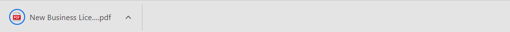

<article class="docs-article">
    <section class="docs-section" id="pdf">
        <div>

            <h1>Export form as PDF</h1> <br>
            <hr>
            <p>
                This feature enables users to export forms with submitted data as a pdf from the UI. Users will have an
                “Export PDF ” button in form view pages to click and get the form downloaded as a pdf in the browser
                itself.
            </p>
            <p>
                <br>
                <br><br><br>
                

            </p>
            <p>

            </p>
            <h3>API Details</h3>
            <br>
              <p>
                <strong>API URL</strong> :
                &lt;form-flow-webapi-server>/form/&lt;form-id>/submission/&lt;submission-id>/export/pdf
            </p>
            <p>
                Optional params:
            </p>
            <p>
                <strong>timezone </strong>: A parameter to render form based on client timezone or any custom timezone.
            </p>
            <p>
                Eg:
                &lt;form-flow-webapi-server>/form/&lt;form-id>/submission/&lt;submission-id>/export/pdf?timezone=Asia/Calcutta
            </p>
            <p>
                <strong>API Method</strong>: GET
            </p>
            <p>
                <strong>API Response</strong>: Will be a blob response that can be used by the client to save it as a
                pdf

                <br><br>
                <pre>
                    <code>%PDF-1.4
                        %����
                        1 0 obj
                        <</Creator (Chromium)
                        /Producer (Skia/PDF m104)
                        /CreationDate (D:20220811083305+00'00')
                        /ModDate (D:20220811083305+00'00')>>
                        endobj
                        3 0 obj
                        <</ca 1
                        /BM /Normal>>
                        endobj
                        6 0 obj
                        <</Type /XObject
                        /Subtype /Image
                        /Width 419
                        /Height 228
                        /ColorSpace /DeviceRGB
                        /SMask 7 0 R
                        /BitsPerComponent 8
                        /Filter /FlateDecode
                        /Length 28596>> stream
                        x���{TG���a�.�=6Q� @""
                        D�&h��"i�c��H"�A��$0"�c���xvgؙ�k���x﷟��[:��u�%!B=?��ju�SU���>O�>0f̘1cƌ3f̘1cƌ3f̘1cƌ3f̘1cƌ3f̘1cƌ3f̘1cƌ3f̘1cƌ3f̘1cƌ3f̘1cƌ3f̘1cƌ3f̘1cƌ3f̘1cƌ3f̘1cƌ3f̘1c�*�/^����>y򤬬�ڵk_��ɓ'�9r�СÇ?~������˷o��駟~��W�~M'ܘ1c���V��߿t�ҁ6nܸe�>|���G�����p�a�?{�,��y���Ǐ�&�ߺu�m�Μ9s��~h�g̘�7�XIIɱc�����>|�]NN΢E���ҦM�6~���#G&&&�����ٳ��x�'6l�رc�L���333!$H��\��=z������7�3f��k3���o�Az�[��!�����Ν��t�Ү]��M�6lذN�:��ݚy�����r�xS�n݈���͛GGG���g���\e��C�    ��ѹs�������1c����Ç�:��;v ۆޱcG!�ryM�eyt���!d�&Mڶm6�|,��hE(����w�ޓ'O�k�H�3����Xr���˗/�u���Ը�8��l�k��1e��aЩ_q5��䓏?���hт;�]�vϞ=P���:u��o���B2f���j����:ؒ��FdڦM�
                        �JL@gQe*V
                        :����俼���w����!J�EEE
                        0`��٨J    ��0�{��yM��1c���~�:|۰a���NJJ���nذ!�MBK�^��?�Pe�ov�7:'-��#�����իٿ�iӦ�ܹ�V�9s����5]~ƌ{����LF`�)>>%|S R�RZNE�* 
                        :CK����'��O>��#z�5jԈ��y��"2{���q���^��R4f��j7o�,((@��:4R�=@�@I��p�Z~A��J�y��M�:y�"""�5kֺukP3|�p�g�;{��ŋ/i&s�/\�`@g̘1�=x��ȑ#�����t�ڵ~���'͂,��~:��7(������`k\\��ѣ-ZDL</code>
                </pre>

            </p>
            <p>
                This feature requires the following prerequisites.
            </p>
            <ol>

                <li>A Chrome installation and its driver are required to render this form and print it as a pdf in
                    headless mode on the server side.
                </li>
            </ol>
            <p>
                Chrome driver path can be provided via env variable like below
            </p>
            <p>
                In windows
            </p>


            <pre class="prettyprint"><code>CHROME_DRIVER_PATH=C:\driver\chromedriver.exe</code>
                </pre>


            <p>
                In Linux
            </p>


            <pre class="prettyprint"><code>CHROME_DRIVER_PATH=/usr/local/bin/chromedriver</code>
                </pre>


            <p>
                If not given the default value will be <code>/usr/local/bin/chromedriver</code>
            </p>
            <p>
                <strong>Installation of Chrome and chrome driver</strong>
            </p>
            <p>
                Forms flow docker images already contain code to install the latest Chrome and its chrome driver as
                shown below
            </p>
            <p>
                Dockerfile
            </p>
            <pre><code>
                 
# Install Chrome WebDriver
RUN CHROMEDRIVER_VERSION=`curl -sS chromedriver.storage.googleapis.com/LATEST_RELEASE` && \
    mkdir -p /opt/chromedriver-$CHROMEDRIVER_VERSION && \
    curl -sS -o /tmp/chromedriver_linux64.zip http://chromedriver.storage.googleapis.com/$CHROMEDRIVER_VERSION/chromedriver_linux64.zip && \
    unzip -qq /tmp/chromedriver_linux64.zip -d /opt/chromedriver-$CHROMEDRIVER_VERSION && \
    rm /tmp/chromedriver_linux64.zip && \
    chmod +x /opt/chromedriver-$CHROMEDRIVER_VERSION/chromedriver && \
    ln -fs /opt/chromedriver-$CHROMEDRIVER_VERSION/chromedriver /usr/local/bin/chromedriver
 
# Install Google Chrome
RUN curl -sS -o - https://dl-ssl.google.com/linux/linux_signing_key.pub | apt-key add - && \
    echo "deb http://dl.google.com/linux/chrome/deb/ stable main" >> /etc/apt/sources.list.d/google-chrome.list && \
    apt-get -yqq update && \
    apt-get -yqq install google-chrome-stable && \
    rm -rf /var/lib/apt/lists/*
 
 
# set display port to avoid crash
ENV DISPLAY=:99

            </code></pre>


        </div>
    </section>
</article>